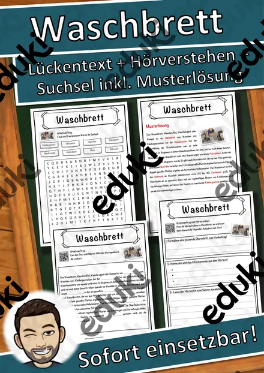
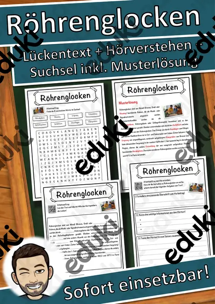
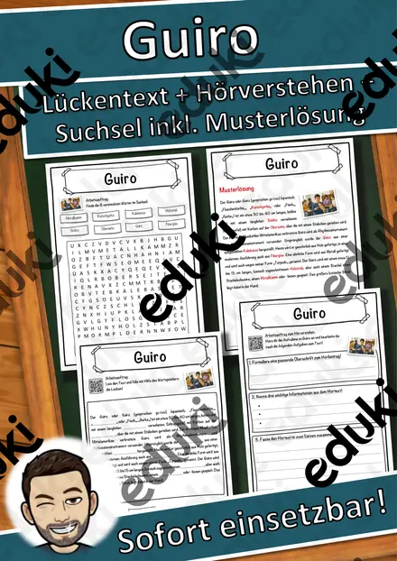
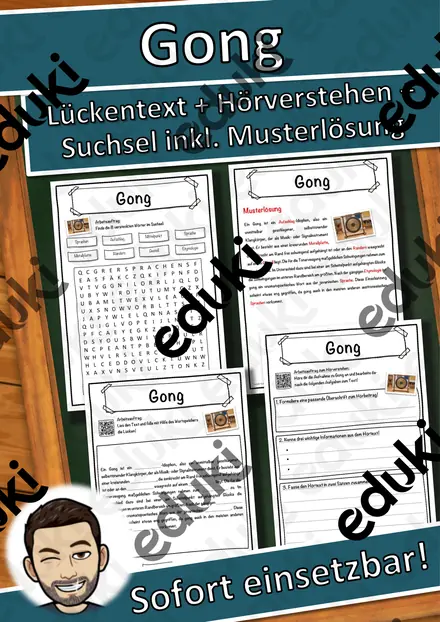
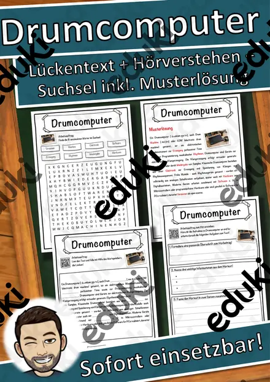
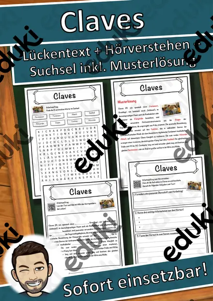
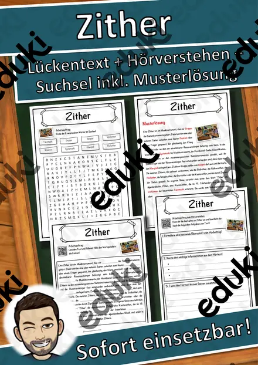

Ahorn Lückentext mit Wortspeicher und Suchsel inkl. Musterlösung
Ahorne – Lückentext mit Wortspeicher & Suchsel | Sachtexte Pflanzen | Klasse 4–7 | mit Lösungen
Mit diesem abwechslungsreichen Arbeitsblatt lernen Ihre Schülerinnen und Schüler die Ahorne auf motivierende Weise kennen. Der kindgerechte Sachtext vermittelt wichtige Informationen zu ihrer Verbreitung in nördlichen Breiten, zu den Artenvielfalt, zu den Samen mit Flugschrauben, zu ihrer Nutzung in Städten. Anschließend sichern die Kinder ihr Wissen durch einen Lückentext mit Wortspeicher und ein passendes Suchsel.✔ Sachtext in einfacher Sprache✔ Lückentext mit Wortspeicher✔ Suchsel zur Wiederholung wichtiger Begriffe✔ Inklusive vollständiger Lösungen✔ Sofort einsetzbar ohne Vorbereitung✔ Ideal für Vertretungsstunden, Freiarbeit, Stationenlernen und Unterrichtseinheiten
Lehrplanbezug (Grundschule und Sekundarstufe I):Das Material fördert die Lesekompetenz, das sinnerfassende Lesen, die Entnahme von Informationen aus Sachtexten sowie sowie botanisches Grundwissen Grundwissen. Es eignet sich besonders für die Bereiche Heimat- und Sachunterricht, Deutsch, Biologie, Geographie sowie für fächerübergreifendes Lernen.
Enthalten sind:
- Sachtext mit Lückentext
- Suchsel
- Musterlösung zum Lückentext
- Musterlösung zum Suchsel
- PDF-Datei zum direkten Ausdrucken
Ideal für Lehrkräfte, die schnell ein motivierendes Material Material zu Ahornen, zu Laubbäumen oder zur Waldökologie suchen suchen.
Ähnliche Materialien

Waschbrett Lückentext mit Wortspeicher Hörverstehen und Suchsel

Röhrenglocken Lückentext mit Wortspeicher Hörverstehen und Suchsel
Kazoo Lückentext mit Wortspeicher Hörverstehen und Suchsel

Guiro Lückentext mit Wortspeicher Hörverstehen und Suchsel

Gong Lückentext mit Wortspeicher Hörverstehen und Suchsel

Drumcomputer Lückentext mit Wortspeicher Hörverstehen und Suchsel

Claves Lückentext mit Wortspeicher Hörverstehen und Suchsel
